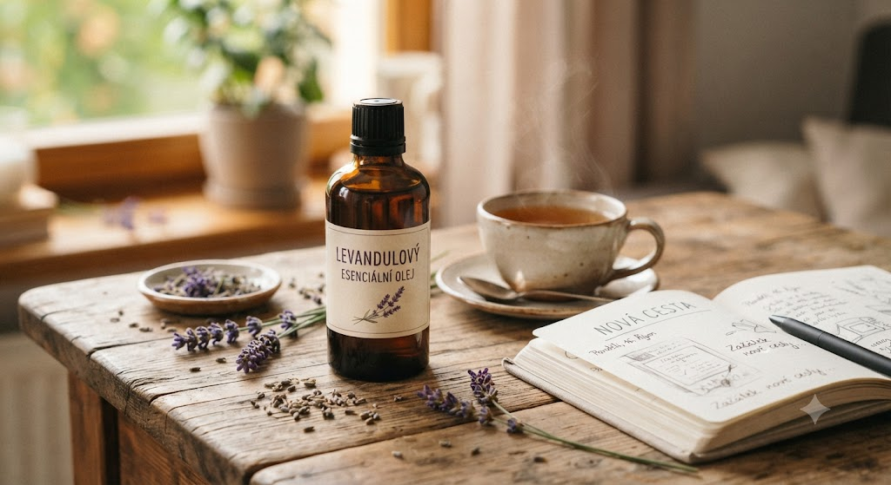

🌿 Lekce 1
první krok na cestě k bezpečnému používání
Ať už máte v ruce svou první lahvičku, nebo teprve přemýšlíte, zda jsou esenciální oleje pro vás, vítejte. Tato první lekce vás provede základy a ukáže vám, jak celý průvodce funguje.

Společně budeme postupovat krok za krokem, abyste si osvojili vše potřebné pro bezpečné a smysluplné používání esenciálních olejů.
Na internetu najdete spoustu informací o esenciálních olejích. Je jich tolik, že je celkem přirozené chvíli tápat a nevědět, kde přesně začít.
Právě proto vznikl tento průvodce.
Každý esenciální olej má jedinečné složení, vůni i vlastnosti, díky kterým nachází své místo v každodenní péči o tělo, mysl i domov.
Při správném používání mohou být cenným pomocníkem například pro:
podporu relaxace a psychické pohody,
vytvoření příjemné atmosféry doma i při práci,
péči o pokožku,
podporu kvalitního spánku,
povzbuzení soustředění a duševní svěžesti,
provonění a přirozenou očistu domácnosti.
Mnohé esenciální oleje mají také antimikrobiální vlastnosti, které jsou předmětem vědeckého výzkumu. Zároveň je důležité mít na paměti, že esenciální oleje nejsou lékem ani náhradou odborné zdravotní péče. Mohou však být hodnotnou součástí zdravého životního stylu a přirozenou podporou každodenní pohody.
Významnou roli hraje také samotná vůně. Čich je úzce propojen s částmi mozku, které souvisejí s emocemi a vzpomínkami. Proto nás některé vůně dokážou zklidnit, povzbudit, dodat energii nebo navodit pocit bezpečí a harmonie.
Mým cílem není zahltit vás desítkami esenciálních olejů ani stovkami informací.
Chci vás jejich světem provést jednoduše, srozumitelně a hlavně postupně.
Stejně jako se člověk učí řídit auto nebo péct chleba, i používání esenciálních olejů je nejlepší osvojovat si krok za krokem. Každá lekce navazuje na předchozí, takže si nové informace budete moci postupně vyzkoušet a získat jistotu při jejich používání.
Esenciální oleje jsou darem přírody, ale zároveň jsou velmi koncentrované. Právě proto je důležité naučit se s nimi zacházet správně a s respektem.
Bezpečné používání není složité – stačí znát několik základních pravidel. V tomto průvodci se je budete učit postupně, abyste si mohli vůni i přínosy esenciálních olejů užívat s klidem a jistotou.
V další lekci se podíváme na to, co jsou esenciální oleje, jak vznikají a proč jejich kvalita hraje při výběru i používání tak důležitou roli.
Další lekce: Co jsou esenciální oleje? — pokračovat →